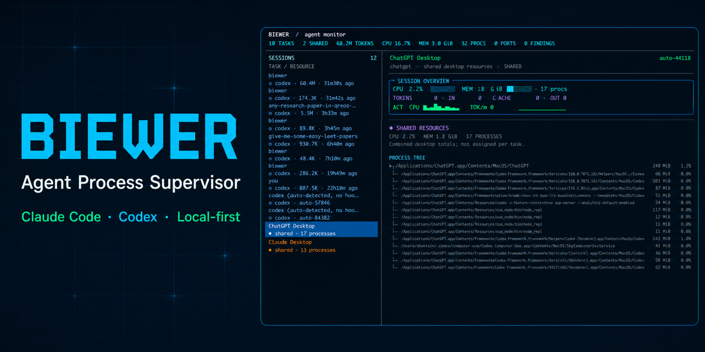

Session overview
Browse Claude and Codex tasks with project, model, activity, and token context.
Biewer is a local terminal dashboard for Claude Code and Codex sessions—tokens, CPU, memory, child processes, ports, and activity in one live view.

CLICK THE DASHBOARD TO WATCH THE DEMO · NO CLOUD ACCOUNT REQUIRED
One terminal. Full context.
Biewer combines agent context, transcript usage, operating-system metrics, and process ancestry without pretending ambiguous desktop resources belong to one task.
Browse Claude and Codex tasks with project, model, activity, and token context.
See input, output, cache, reasoning, and project-level consumption from local sources.
Follow validated PIDs and their descendants with CPU and attributed memory.
Spot listening ports, resource pressure, and cleanup opportunities while agents work.
Hooks, launch IDs, PID start times, and ancestry reduce false ownership claims.
Desktop application totals remain shared when per-task attribution would be misleading.
Ready in a minute
The installer detects macOS or Linux and selects the correct ARM64 or x86-64 precompiled binary. Then setup connects local agent activity.
$ curl --proto '=https' --tlsv1.2 -LsSf \ https://github.com/shaktsin/biewer/releases/latest/download/biewer-installer.sh | sh $ source ~/.biewer/bin/env $ biewer setup $ biewer tui
Private by architecture
Biewer runs locally and stores operational metadata on your machine. It does not require an API key or upload your prompts and transcripts.